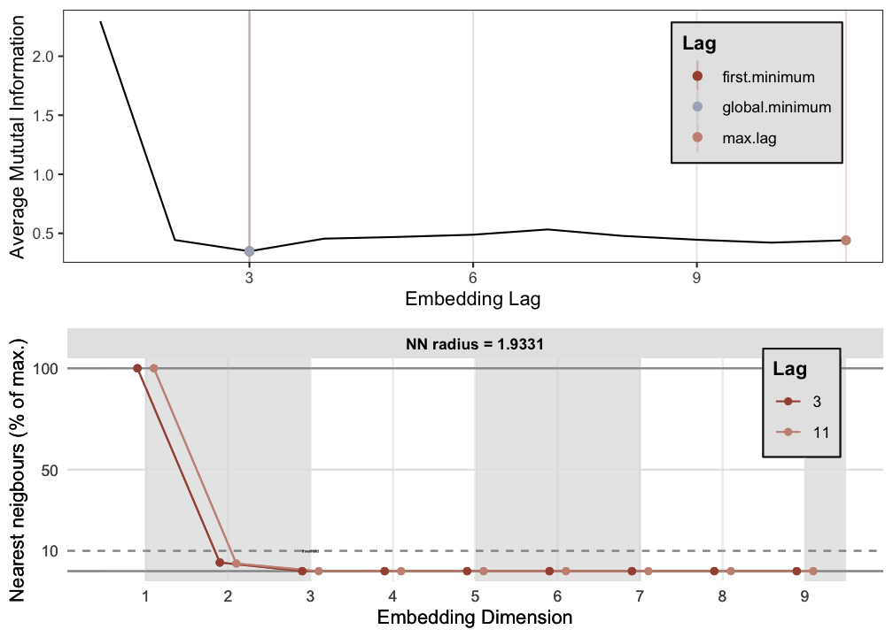
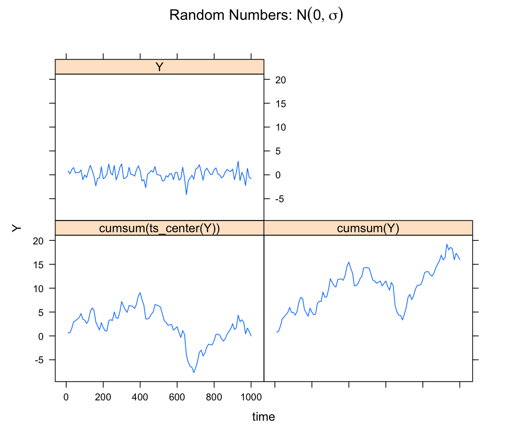
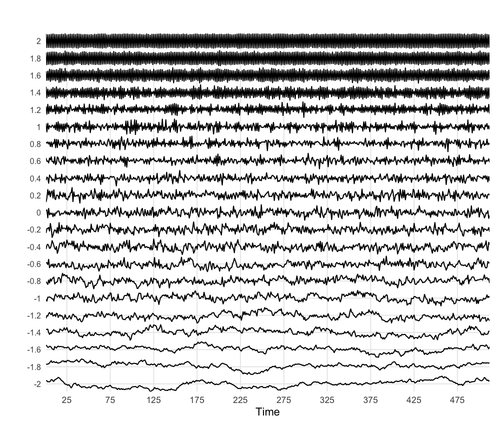
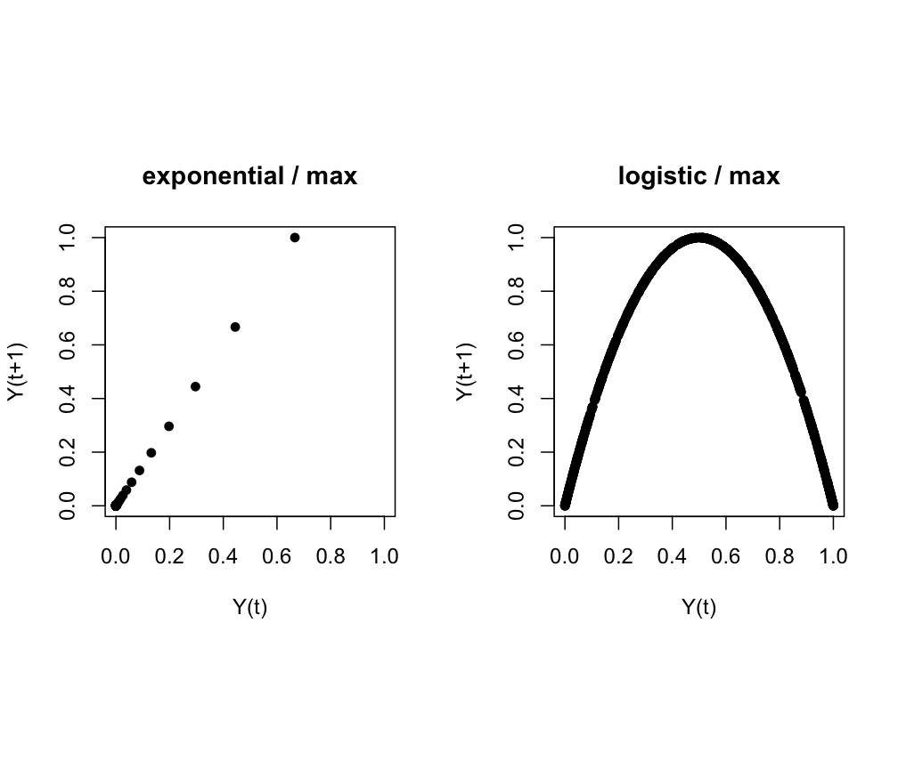
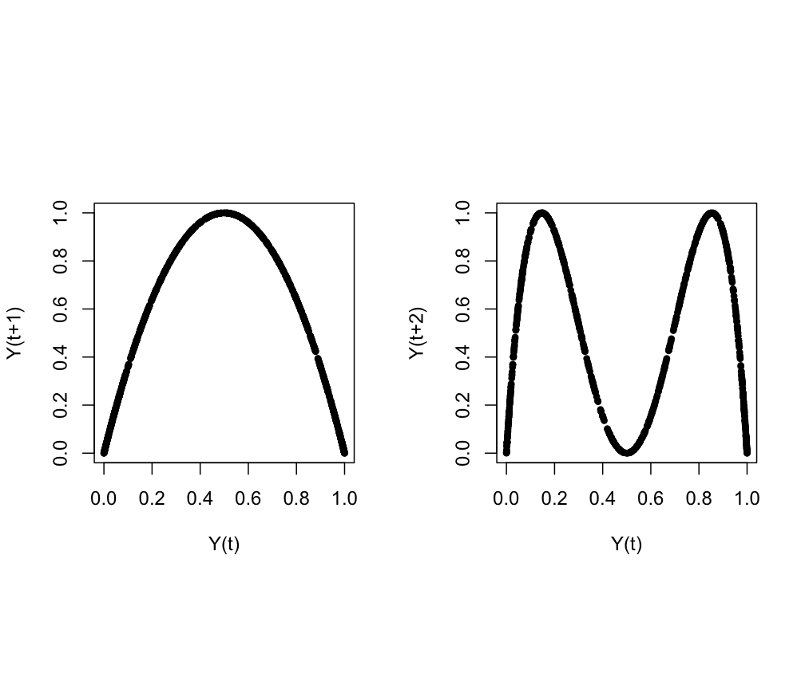
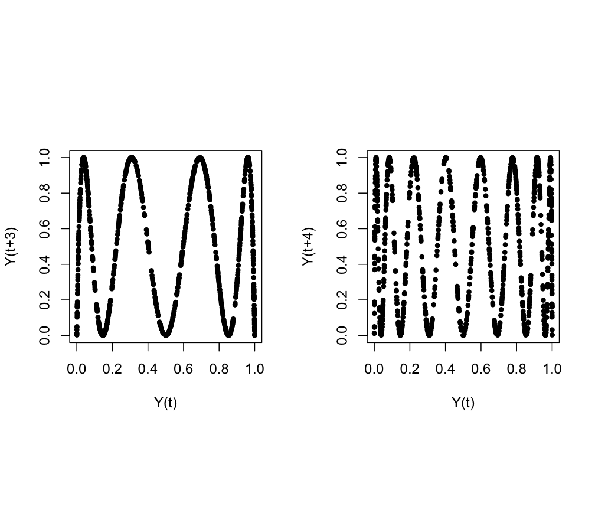
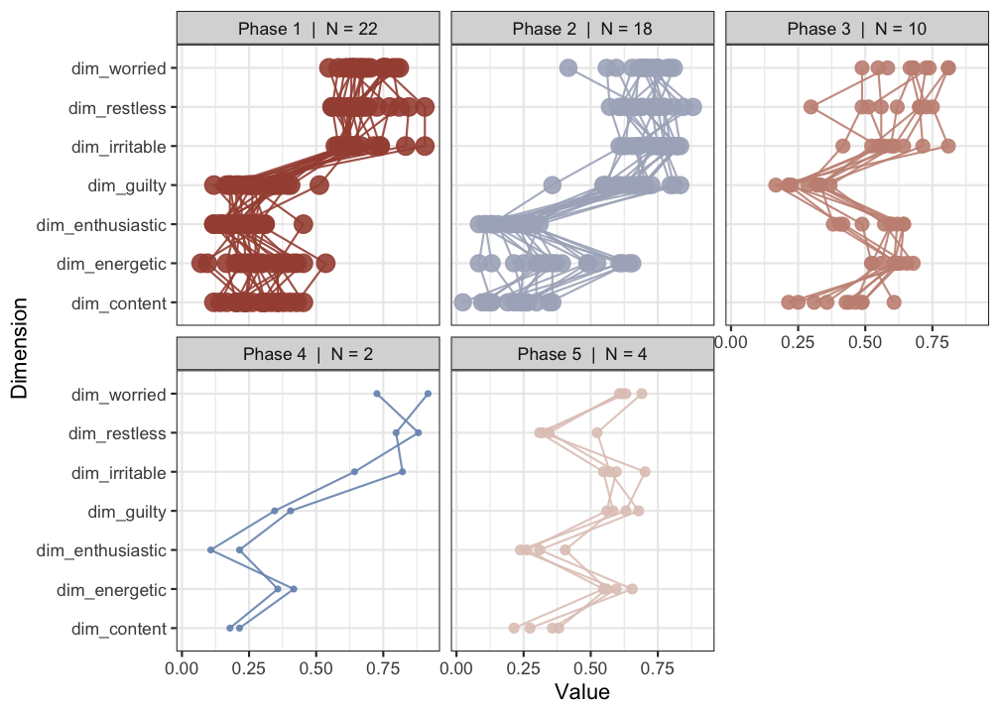

A Working with time series in R
There are many ways to handle time series in R, this appendix provides some examples and suggest some best practices, based on the function ts(), which creates a time series object.
A time series object is expected to have a time-dimension on the x-axis. This is very convenient, because R will generate the time axis for you by looking at the time series properties attribute of the object. Even though we are not working with measurement outcomes, consider a value at a time-index in a time series object a sample:
Start- The value of time at the first sample in the series (e.g., \(0\), or \(1905\))End- The value of time at the last sample in the series (e.g., \(100\), or \(2005\))Frequency- The amount of time that passed between two samples, or, the sample rate (e.g., \(0.5\), or \(10\))
Examples of using the time series object.

## [1] 1 100 1## Time Series:
## Start = 1
## End = 100
## Frequency = 1
## [1] 1 2 3 4 5 6 7 8 9 10 11 12 13 14 15 16 17 18 19 20 21 22 23 24 25 26 27 28 29 30 31 32 33 34
## [35] 35 36 37 38 39 40 41 42 43 44 45 46 47 48 49 50 51 52 53 54 55 56 57 58 59 60 61 62 63 64 65 66 67 68
## [69] 69 70 71 72 73 74 75 76 77 78 79 80 81 82 83 84 85 86 87 88 89 90 91 92 93 94 95 96 97 98 99 100For now, these values are in principle all arbitrary units (a.u.). These settings only make sense if they represent the parameters of an actual measurement procedure.
It is easy to adjust the time vector, by assigning new values using tsp() (values have to be possible given the time series length). For example, suppose the sampling frequency was \(0.1\) instead of \(1\) and the Start time was \(10\) and End time was \(1000\).
## [1] 1e+01 1e+03 1e-01## Time Series:
## Start = 10
## End = 1000
## Frequency = 0.1
## [1] 10 20 30 40 50 60 70 80 90 100 110 120 130 140 150 160 170 180 190 200 210 220 230 240 250 260 270
## [28] 280 290 300 310 320 330 340 350 360 370 380 390 400 410 420 430 440 450 460 470 480 490 500 510 520 530 540
## [55] 550 560 570 580 590 600 610 620 630 640 650 660 670 680 690 700 710 720 730 740 750 760 770 780 790 800 810
## [82] 820 830 840 850 860 870 880 890 900 910 920 930 940 950 960 970 980 990 1000A.0.1 Plotting a ts object as a time series
Depending on which packages you use, there will be different settings applied to time series objects created by ts(). Below are some examples of differences between plotting routines.
require(lattice) # Needed for plotting
require(latticeExtra) # Needed for plotting
require(casnet) # Need for ts_center()
# stats::plot.ts
plot(Y, lwd = 2, main = "stats::plot.ts")

A.0.2 Plotting multiple time series in one figure
Plot multiple time series in frames with plot.ts() in package::stats.
This function takes a matrix as input, here we use cbind( ... ).
# stats::plot.ts
plot(cbind(Y,
cumsum(Y),
cumsum(ts_center(Y))
),
yax.flip = TRUE, col = "blue", frame.plot = TRUE,
main = expression(paste("Random Numbers: ",N(0,sigma))), xlab = "time (a.u.)")
Plot multiple time series in one graph with ts.plot() in package::graphics.
This function can handle multiple ts objects as arguments.
# graphics::ts.plot
ts.plot(Y,
cumsum(Y),
cumsum(ts_center(Y)),
gpars = list(xlab = "time (a.u.)",
ylab = expression(Y(t)),
main = expression(paste("Random Numbers: ",N(0,sigma))),
lwd = rep(2,3),
lty = c(1:3),
col = c("darkred","darkblue","darkgreen")
)
)
legend(0, 18, c("Y","cumsum(Y)", "cumsum(ts_center(Y))"), lwd = rep(2,3), lty = c(1:3), col = c("darkred","darkblue","darkgreen"), merge = TRUE, cex=.9)
Use xyplot() in package::lattice to create a plot with panels. The easiest way to do this is to create a dataset in so-called “long” format. This means the variable to plot is in 1 column and other variables indicate different levels, or conditions under which the variable was observed or simulated.
Function ldply() is used to generate \(Y\) for three different settings of \(r\). The values of \(r\) are passed as a list and after a function is applied the result is returned as a dataframe.
require(plyr) # Needed for function ldply()
# Create a long format dataframe for various values for `r`
data <- cbind.data.frame(Y = c(as.numeric(Y), cumsum(Y), cumsum(ts_center(Y))),
time = c(time(Y), time(Y), time(Y)),
label = factor(c(rep("Y",length(Y)), rep("cumsum(Y)",length(Y)), rep("cumsum(ts_center(Y))",length(Y))))
)
# Plot using the formula interface
xyplot(Y ~ time | label, data = data, type = "l", main = expression(paste("Random Numbers: ",N(0,sigma))))
Or, if you have very may time series, you can use the function PLOT() in casnet.
# Create a data frame with time series
# Generate some coloured noise
N <- 512
noises <- seq(-2,2,by=.2)
y <- data.frame(matrix(rep(NA,length(noises)*N), ncol=length(noises)))
for(c in seq_along(noises)){y[,c] <- noise_powerlaw(N=N, alpha = noises[c])}
colnames(y) <- paste0(noises)
plotTS_multi(y)
Note that the y-axis is rescaled for each series and does not reflect magnitude differences between the series.
A.0.3 The return plot
To create a return plot the values of \(Y\) have to be shifted by a certain lag. The functions lead() and lag() in package::dplyr are excellent for this purpose (note that dplyr::lag() behaves different from stats::lag()).
# Function lag() and lead()
library(dplyr)
library(casnet)
# Get exponential growth
YY <- growth_ac(N=1000,r=1.5,type = "driving")
Y1 <- as.numeric(YY/max(YY))
# Get logistic growth in the chaotic regime
Y2 <- as.numeric(growth_ac(N=1000,r=4,type = "logistic"))
# Use the `lag` function from package `dplyr`
op <- par(mfrow = c(1,2), pty = "s")
plot(dplyr::lag(Y1), Y1, xy.labels = FALSE, pch = 16, xlim = c(0,1), ylim = c(0,1), xlab = "Y(t)", ylab = "Y(t+1)",
main = "exponential / max")
plot(dplyr::lag(Y2), Y2, xy.labels = FALSE, pch = 16, xlim = c(0,1), ylim = c(0,1), xlab = "Y(t)", ylab = "Y(t+1)",
main = "logistic / max")
Use l_ply() from package::plyr to create return plots with different lags. The l_ before ply means the function will take a list as input to a function, but it will not expect any data to be returned, for example in the case of a function that is used to plot something.
# Explore different lags
op <- par(mfrow = c(1,2), pty = "s")
plyr::l_ply(1:4, function(l) plot(dplyr::lag(Y2, n = l), Y2, xy.labels = FALSE, pch = 16, xlim = c(0,1), ylim = c(0,1), xlab = "Y(t)", ylab = paste0("Y(t+",l,")"), cex = .8))
A.0.4 Using ggplot2
Becoming proficient at ggplot2 can take some time, but it does pay off. One of the problems with plotting time series data is that ggplot2 wants tidy data in long format. Tidy data is:
Tidy data is a standard way of mapping the meaning of a dataset to its structure. A dataset is messy or tidy depending on how rows, columns and tables are matched up with observations, variables and types. In tidy data: 1. Each variable forms a column. 2. Each observation forms a row. 3. Each type of observational unit forms a table.
—Wickham & others (2014)
So if we have a set of time series as in the previous examples, we need to change it to long format.
library(tidyverse)
# A wide data frame
df.wide <- data.frame(rnormY = Y,
cumsumY = cumsum(Y),
centercumsumY = cumsum(ts_center(Y)),
time = seq_along(Y)
)
glimpse(df.wide)## Observations: 100
## Variables: 4
## $ rnormY <dbl> 0.78482166, 0.19776074, 1.07957851, 1.52605836, 0.40026016, 0.46755371, 0.48673832, 1.02959251, -1.02988553, -0.02420…
## $ cumsumY <dbl> 0.7848217, 0.9825824, 2.0621609, 3.5882193, 3.9884794, 4.4560331, 4.9427715, 5.9723640, 4.9424784, 4.9182692, 4.35557…
## $ centercumsumY <dbl> 0.6249966, 0.6629322, 1.5826857, 2.9489189, 3.1893540, 3.4970826, 3.8239959, 4.6937633, 3.5040527, 3.3200184, 2.59750…
## $ time <int> 1, 2, 3, 4, 5, 6, 7, 8, 9, 10, 11, 12, 13, 14, 15, 16, 17, 18, 19, 20, 21, 22, 23, 24, 25, 26, 27, 28, 29, 30, 31, 32…# Create a long dataframe using gather()
df.long <- df.wide %>%
gather(key=TimeSeries,value=Y,-"time")
glimpse(df.long)## Observations: 300
## Variables: 3
## $ time <int> 1, 2, 3, 4, 5, 6, 7, 8, 9, 10, 11, 12, 13, 14, 15, 16, 17, 18, 19, 20, 21, 22, 23, 24, 25, 26, 27, 28, 29, 30, 31, 32, 3…
## $ TimeSeries <chr> "rnormY", "rnormY", "rnormY", "rnormY", "rnormY", "rnormY", "rnormY", "rnormY", "rnormY", "rnormY", "rnormY", "rnormY", …
## $ Y <dbl> 0.78482166, 0.19776074, 1.07957851, 1.52605836, 0.40026016, 0.46755371, 0.48673832, 1.02959251, -1.02988553, -0.02420922…
# using facets
ggplot(df.long, aes(x=time,y=Y)) +
geom_line() +
facet_wrap(~TimeSeries) +
theme_bw()
# using facets
ggplot(df.long, aes(x=time,y=Y)) +
geom_line() +
facet_grid(TimeSeries~.) +
theme_bw()
To create a return plot you can use geom_path() instead of geom_line() and make the area square using coord_equal().
# Add a lagged variable
df.long <- df.long %>%
group_by(TimeSeries) %>%
mutate(Ylag = dplyr::lag(Y))
# Use geom-path()
ggplot(df.long, aes(x=Y,y=Ylag,group=TimeSeries)) +
geom_path() +
facet_grid(.~TimeSeries) +
theme_bw() +
labs(title = "Equal coordinates", x="Yt",y="Yt+1") +
coord_equal()
# You could also have free axes
ggplot(df.long, aes(x=Y,y=Ylag,group=TimeSeries)) +
geom_path() +
facet_grid(.~TimeSeries, scales = 'free') +
labs(title="Free axes", x="Yt",y="Yt+1") +
theme_bw() 
# Or free axes and a free space
ggplot(df.long, aes(x=Y,y=Ylag,group=TimeSeries)) +
geom_path() +
facet_grid(.~TimeSeries, scales = 'free', space = 'free') +
labs(title="Free axes and free space", x="Yt",y="Yt+1") +
theme_bw()